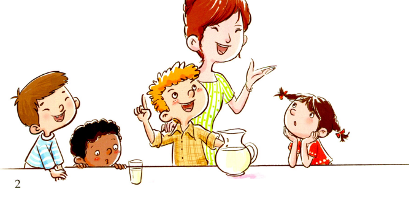

Billy is six years old. He visits his uncle and aunt every summer. They live on a farm.
They have cows, chickens, sheep, and a big horse on the farm. Billy loves all the animals.
This summer, he is going to learn how to milk a cow. Wow! His friends cannot believe it.
▼ 点击查看中文翻译
比利六岁了。每年夏天他都会去拜访他的叔叔和阿姨。他们住在一个农场里。
农场里有奶牛、鸡、绵羊，还有一匹大马。比利喜欢所有的动物。
今年夏天，他打算学习如何挤牛奶。哇！他的朋友们简直不敢相信。
农场里有奶牛、鸡、绵羊，还有一匹大马。比利喜欢所有的动物。
今年夏天，他打算学习如何挤牛奶。哇！他的朋友们简直不敢相信。
